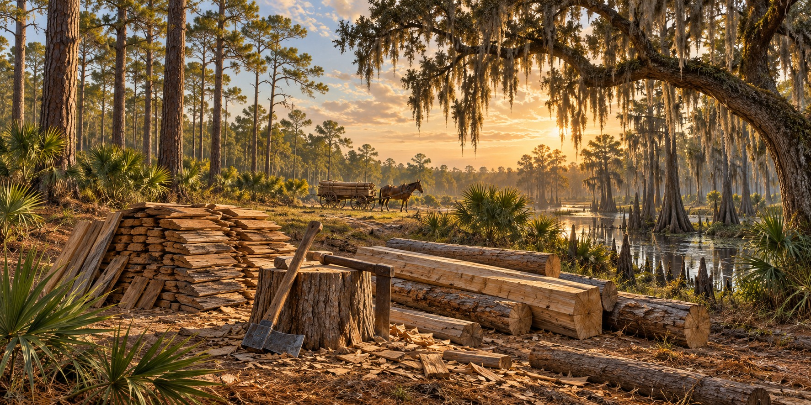

Building with What the Land Provided
How Florida’s Forests, Swamps, and Prairies Gave Pioneer Families Everything They Needed to Build a Life

The wagon was loaded with what the family could not make: iron nails, a broadaxe, a crosscut saw, a froe, a drawing knife, a pot, seed and salt pork. Everything else, every log, shingle, handful of clay and moss, rail and board, would come from the land ahead. This was not a hardship. This was the plan.
The Forest Was the Hardware Store
Longleaf pine was the backbone of pioneer construction. Its dense, resin-saturated heartwood, called heart pine or “yellowheart,” resisted rot and insects and went into walls, joists, rafters, fence rails, cribs and smokehouse frames. It split cleanly with a froe, could be hewn square with a broadaxe, and burned hot and fragrant. In the 1840s and 1850s the longleaf forests covered millions of acres of the northern and central peninsula.
Cypress and Resistance to Decay
Bald cypress grows in wetlands, and old-growth heartwood is valued for its natural resistance to decay. That resistance is not immunity: the age and part of the tree, exposure and maintenance matter. Cypress supplied shingles and other useful wood, while access to a swamp affected how difficult harvesting and transport would be.
Live Oak and the Cabbage Palm
Live oak was dense and hard to split, but it went into barn sills, corner posts, plates, wheel hubs and tool handles where strength mattered. The cabbage palm was the most generous plant: its heart was edible, its fronds shed rain as thatch for temporary shelters, and its fibers and old trunks served as basketry, rough flooring and garden soil.
Clay, Moss and the Art of Chinking
Gaps between logs needed filling to reduce drafts and keep out rain. Builders used combinations of available materials, including wood or stone blocking, moss or other soft filler, and an outer layer of daubing. The mix varied. It required repair as the building settled and the filling weathered; one unsourced clay-to-moss ratio cannot describe the whole state.
Limestone, Tools and Water
Stone could be used for foundations and chimneys where available. A small set of iron tools helped workers turn trees into usable building material. Waterways could assist transport, but access to timber, stone and water differed from one homestead to another.
The Invisible Material: Knowledge
Materials alone did not build a house. People also needed knowledge of trees, soils, tools and changing weather. Families shared practical skills and adapted them to unfamiliar places. Florida’s Native communities had their own long-standing building traditions; specific claims about who taught whom require evidence rather than a generalized pioneer story.
Quick Facts
| Longleaf pine | Walls, joists, rafters, rails, cribs; heartwood resists rot |
|---|---|
| Cypress | Shingles, cisterns, troughs; premier wet-wood |
| Live oak | Heavy structural members; dense and hard to split |
| Cabbage palm | Thatch, food, fiber, soil |
| Chinking | Clay with Spanish moss |
| Limestone | Chimneys and foundation piers |
| Wooden pegs | Trunnels, driven in auger-bored holes |
| Springs | A source of household water; clear appearance does not establish safety |
Did You Know?
Cabbage palm fronds were a rainproof temporary roof.
Pioneers joined timber frames with wooden pegs that swelled to grip.
Vocabulary
Heart pine: the dense, resin-rich core of a mature longleaf pine.
Trunnel: a wooden peg, from “tree nail,” used to join timbers.
Daubing: clay-based filler spread between logs.
Discussion Questions
1. Which Florida material would you reach for first, and why?
2. How did shared knowledge help settlers use unfamiliar materials?
Related Articles
FLH-0049 — Log Construction Methods
FLH-0050 — Building a Homestead
Sources
Ste. Claire, Dana. Cracker: The Cracker Culture in Florida History. Museum of Arts and Sciences, Daytona Beach, 1998.
Nelson, Gil. The Trees of Florida: A Reference and Field Guide. Pineapple Press, 1994.
Milanich, Jerald T. Florida’s Indians from Ancient Times to the Present. University Press of Florida, 1998.
Heritage Village of Pinellas County; Manatee Village Historical Park.
Florida Memory. State Library and Archives of Florida. floridamemory.com
USDA Forest Service — Wood handbook